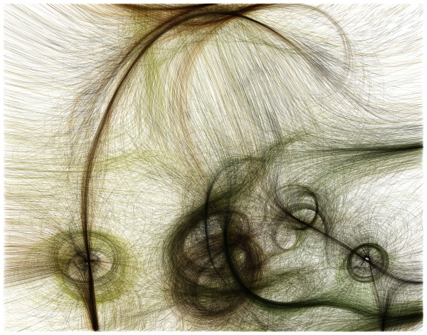

In the late 1940's and early 1950's, Cyberneticist Grey Walter pioneered the engineering of autonomous agents, as early examples of self-directed robots, with his series of tortoises.
Remarkably, this direction of research was largely forgotten as efforts in artificial intelligence concentrated on symbolic thinking. A brief history can be read here -- but the story of Walter and other British Cyberneticians is truly fascinating; I highly recommend Andrew Pickering's account in The Cybernetic Brain. This wasn't just random tinkering, there was an explicit agenda of understanding human and machine together.
Walter's tortoises have inspired many great research products of the last century, including:
the turtle graphics of Logo, which might be before your time, but initiated a whole generation of children into computer programming decades ago and led to LEGO Mindstorms among other things,
the situated robotics of Rodney Brooks (which you may know of as the "iRobot" vaccuum cleaner),
the flocking simulations of Craig Reynolds (which you have seen in hundreds of films, games, etc.),
the ever-resurgent waves of Cybernetics, including Valentino Braitenberg's Vehicles (which we will look at in more depth now).

Vehicles
A Braitenberg vehicle is an agent that can autonomously move around. It has primitive sensors (measuring some stimulus at a point) and wheels (each driven by its own motor) that function as actuators or effectors. A sensor, in the simplest configuration, is directly connected to an effector, so that a sensed signal immediately produces a movement of the wheel. Depending on how sensors and wheels are connected, the vehicle exhibits different behaviors (which can be goal-oriented). wikipedia
Cyberneticist Valentino Braitenberg argues that his extraordinarily simple mechanical vehicles manifest behaviors that appear identifiable as fear, aggression, love, foresight, and optimism. The vehicle idea was a thought experiment conceived to show that complex, apparently purposive behaviour did not need to depend on complex representations of the environment inside a creature or agents brain. In fact simply by reacting to the environment in a consistent manner was more than enough to explain the low level reactive behaviours exhibited by many animals.
This book is quite short, but richly dense. There's a copy of Ch1-6 in our Readings folder.
Vehicles have also been constructed in hardware of course // see examples here, here, here.
Can we think of ways to merge ideas with our drawing apps?
Can we use our Node.js progress to place our different vehicles into the same world? Where does the 'thinking' happen?
Mindstorms (1980)
Papert, Seymour A. Mindstorms: Children, Computers, and Powerful Ideas (2nd Edition). Basic books, 1993.
(The PDF is in our class files in Teams)
Seymour Papert was a psychologist and mathematician, and education theorist, deeply inspired by Jean Piaget's influential research into how children learn. Mindstorms is the book that started the computer revolution in schools, pioneering the invention of creative ways to learn through computing.
(It did this through an innovative language called LOGO that put children in charge of a drawing turtle. This simple model has had a remarkable impact on a whole generation of thinkers and makers, and also reflects a lineage back to earlier cybernetic "turtles"...)
Papert is interested in how learning happens, how understanding grows
Inspired as a child by gears as a model to understand mathematics & physics (and more).
Gears serve as a transitional object/metaphor, and use "body knowledge" and putting yourself in their place ("You can be the gear".) Gears as an "object-to-think-with", using the full range of human sensitivities.
"Anything is easy if you can assimilate it to your collection of models. If you can't, it will be painfully difficult... What an individual can learn, and how one learns it, depends on what models one has available."
(Piaget: children build their own intellectual structures)
The deepest things we teach ourselves, and they are accompanied by a feeling of love for it (affinity, not talent)
"Intellectual structures grow out of one another... they acquire both logical and emotional form"
Education, as fostering learning, is about creating the conditions under which intellectual models take root.
"My thesis could be summarized as: What the gears cannot do the computer might. The computer is the Proteus of machines. Its essence is its universality, its power to simulate. Because it can take on a thousand forms and can serve a thousand functions, it can appeal to a thousand tastes. [Mindstorms] is a result of my own attempts... to turn computers into flexible enough instruments that many children can each create for themselves something like what the gears were for me."
Against the "schizophrenic" 'two cultures' separation of humanists-artists and scientists-engineers. Suggests computers may be a tool to break this division.
In practice, knowing-that (propositional knowledge) and knowing-how (procedural knowledge) are very rarely separated.
Computer-aided instruction should not mean making the computer teach--"the computer programming the child"--instead the child must program the computer, attaining mastery and intimate contact with some of the deepest ideas.
Starts with analogy of learning a language, in an active sense: having a conversation with the machine.
Design an environment in which a conversational approach becomes natural, informal, interesting
Not instructing mathematics, but exploring in "mathland" (not teaching French, but living in France)
Child as builder: builder needs materials; art of making good materials in the world around the builder
Starts with Turtle as object-to-think-with. The child "talks" to the turtle by giving instructions, which the turtle interprets from its own perspective, to move around, sometimes drawing lines, or making sounds, etc.
Sympathetic reasoning: To understand how to draw a square, you walk the square yourself, talking "TURTLE TALK" to figure out what to do. It also draws on well-established "body geometry" and other embodied cognition.
Turtles can be on-screen, or physical; they can get quite advanced. Children are learning to program, and learning mathematics, without being taught.
Introduces concept of "microworlds", such as the simple mathland of the Turtle. A place where a certain kind of knowledge can grow with ease, because of the basic materials that are ready-to-hand.
A rich space of behaviours (e.g. Kaleidoscopes) possible if one turtle can give another turtle instructions.
Another example microworld that can teach Newtonian physics, begins not with forces, but with "dynaturtles" that are always moving, talking when they meet.
Soon students are thinking about what to add to a turtle-nature, what to add to a world-nature.
Recall the notion of "tapes" and "machines" from our first lecture:
For a moment, don't think of a program as a tool, but as a pattern of data, a string of bits. This is clearer in data-driven representations of programs, e.g. state machine tables.
Can you generate a random program?
Can the same string of bits be interpreted in different ways (semantics)?
Interpreter A: when I see X do Q, when I see Y do R.
Interpreter B: when I see X do S, when I see Y do T.
Interpreter C: when I see X create A, when I see Y create B...
Interpreter D: when I see X become C, when I see Y become D...
Can you make a self-reproducing machine?
And recall the notes on Control Flow (snakes and ladders): the default assumed flow moves from one step to the next, other control flows redirect that.
Practice! Make!
Perhaps we can build a turtle-language interpreter? (And vice-versa: generator. Value of bidirectional translations!)